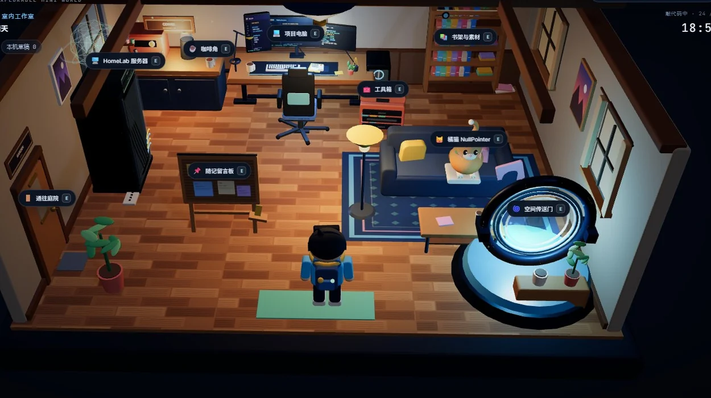
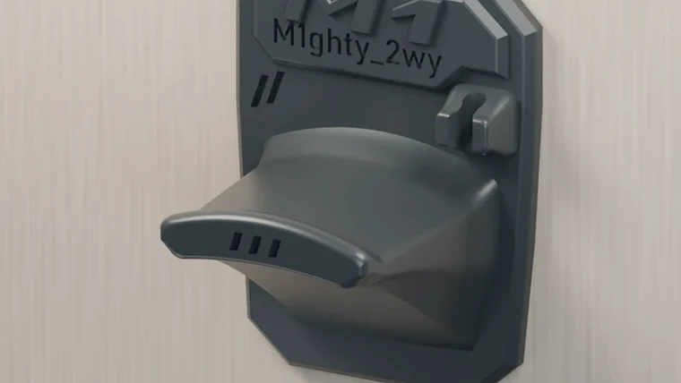
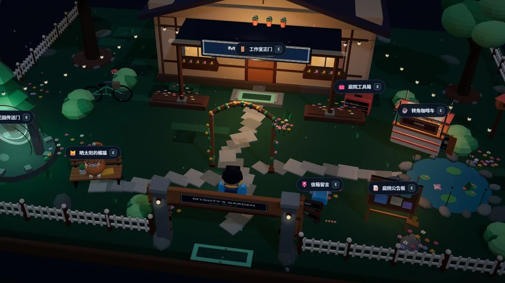

Java 后端工程师 · 实时 3D 交互实践者
这里收录我的工程实践、3D 作品和技术笔记。你也可以走进庭院，沿着场景里的线索探索。

数字孪生 / Godot
探索校园地图、基础设施图层和第三人称漫游。

产品设计 / 3D 打印
为西伯利亚 T10 设计的免打孔挂架，附 A1 mini 的 PLA 打印工程。

实时图形 / Three.js
走进庭院和工作室，在场景里发现项目、工具和彩蛋。
正在加载项目…
正在加载文章…
关注 Java 服务端开发与实时 3D 交互实践。